| 版本 | V0.3.1.0 |
| 下载 | https://www.vfilename.com/download/ |
| 支持 | Windows 10 / Windows 7 / WinRAR 6.00 |
| 首页 | https://www.vfilename.com/ |
| VirusTotal | 1/69 |
| 源代码 | https://github.com/vfilename/vfilename |
Altium Designer是流行的电路设计工具，它的文档提到：“The copy saved to the local history has a date and timestamp included in the filename and is saved in the compressed ZIP format used by the Local History feature.”
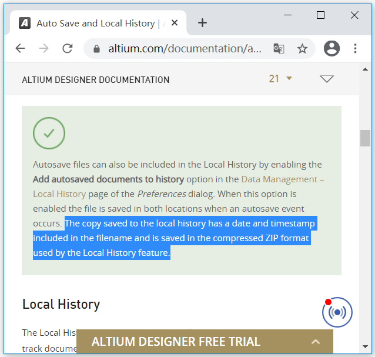
DeepL翻译成中文：
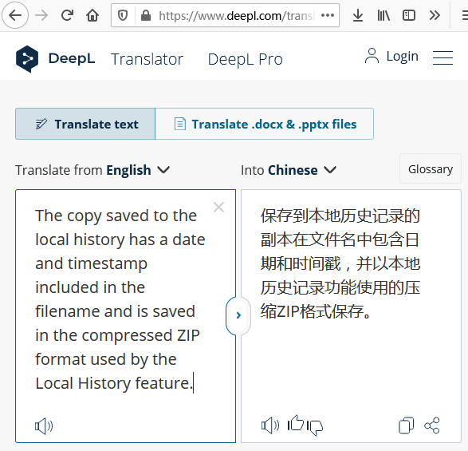
所以压缩包来保存文档的历史，是可行的，因为Altium靠谱。Windows默认支持ZIP（默认就能对ZIP读写），但是最保险的方案是，Windows不可操作历史压缩包（“别碰这些文件”）。主要选项是RAR和7Z，Google提示RAR更流行：
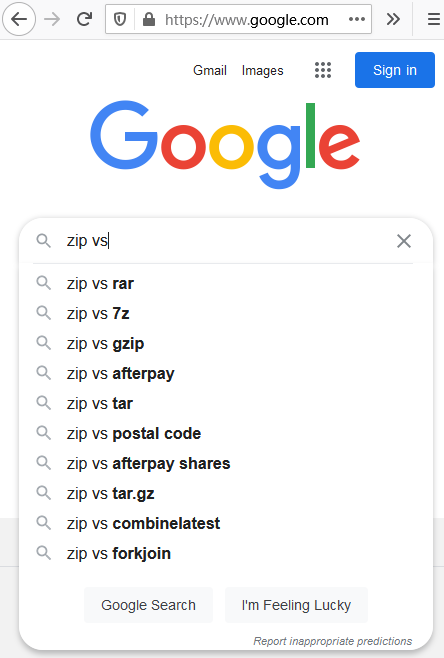
Google Trends也显示RAR更流行：
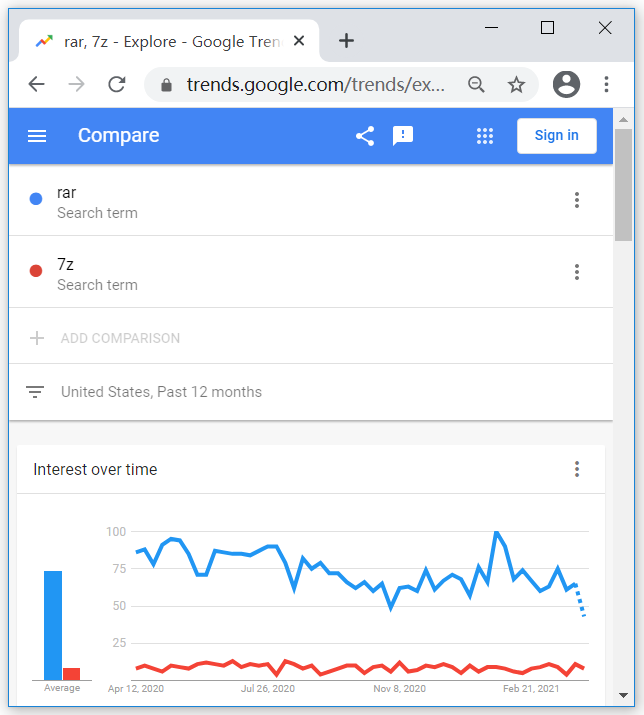
解压然后双击运行
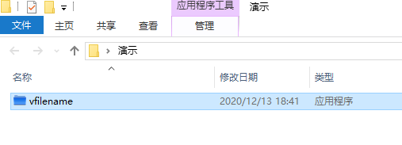
最小化窗口，让它后台运行
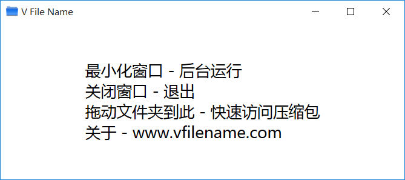
右键点击要打包的文件，选择WinRAR的“添加到压缩文件”
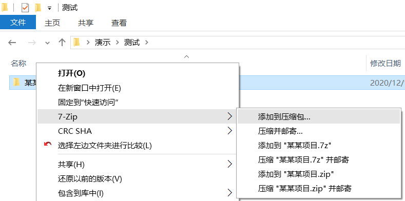
填写用户名（例如“刘志勇”）和说明（例如“一次测试”），点击“生成压缩包”
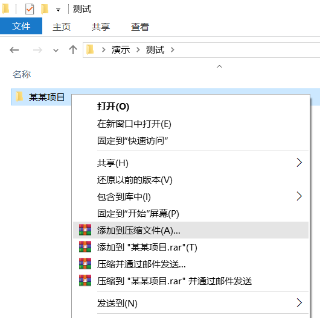
生成的RAR压缩包，其文件名包含：项目、用户名、时间、说明文字
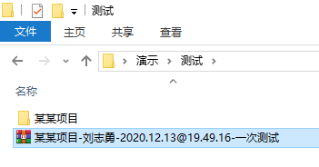
在系统托盘单击应用的图标，可以显示应用的窗口
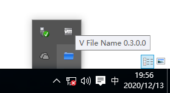
应用的窗口
压缩包的表格
把一个版本的内容送入比较工具（例如Beyond Compare），非常便捷：
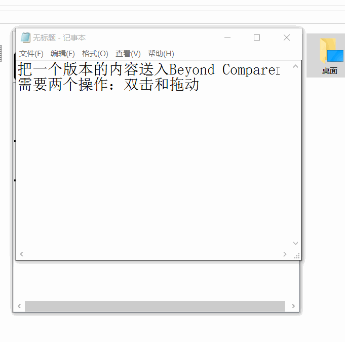